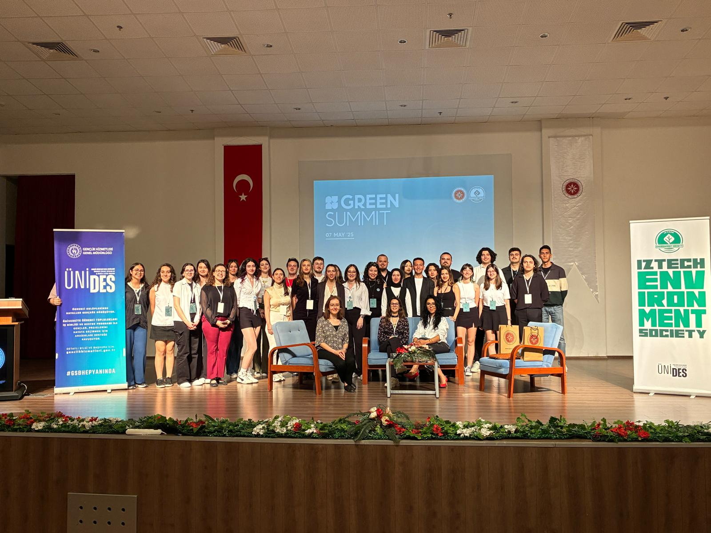

Devam Ediyor
Green Summit 2024 ve 2025
Sektör liderlerini, akademisyenleri ve çevre dostu yenilikçileri bir araya getiren geleneksel zirvemiz, sürdürülebilir bir gelecek için ilham verici diyaloglara ve çözümlere ev sahipliği yapıyor.